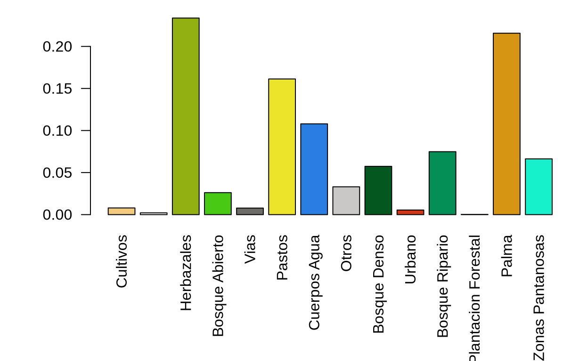
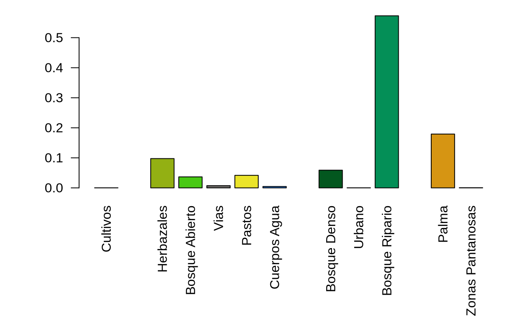

Explorar la base de datos y hacer consultas
Todos los códigos que se utilizaron para crear y analizar la base de datos están en el repositorio: https://github.com/PEM-Humboldt/biodiversity-puerto-wilches/tree/master
En un primer ejercicio, conecta la base de datos en:
(no olvidar desconectar las sesiones!)
En R, pueden aplicar el codigo siguientes para obtener una lista de las tablas de la base de datos:
(anotar: yo utilicé un sistema particular, pgpass para no tener que mostrar mi contraseña en un sitio web abierto, vas a necesitar añadir los parametros “user” y “password” para poder conectarte a la base de datos)
require(RPostgreSQL)
fracking_db<-dbConnect(PostgreSQL(),dbname="fracking",host="20.84.88.119")
dbListTables(fracking_db) [1] "spatial_ref_sys"
[2] "phy_chi_hidro_event"
[3] "assign_individual_tag"
[4] "homolog_def"
[5] "def_landcov"
[6] "landcov"
[7] "platform"
[8] "punto_referencia"
[9] "registros_extra"
[10] "def_categ_event_extra"
[11] "def_season"
[12] "gp_event"
[13] "event_extra"
[14] "def_var_event_extra"
[15] "anfibios_registros"
[16] "def_var_habitat"
[17] "def_var_ind_charac"
[18] "def_tax_rank"
[19] "atropellamientos_event"
[20] "registros"
[21] "aves_registros"
[22] "botanica_event"
[23] "botanica_registros_arborea"
[24] "anfibios_event"
[25] "hidrobiologico_registros_macroinvertebrados"
[26] "hidrobiologico_registros_perifiton"
[27] "hidrobiologico_registros_zooplancton"
[28] "hormigas_registros"
[29] "morfo_taxo"
[30] "individual_characteristics"
[31] "phy_chi_hidro_aguas"
[32] "multimedia"
[33] "institution"
[34] "phy_chi_hidro_sedi"
[35] "phy_chi_peces"
[36] "individual_tag"
[37] "mariposas_registros"
[38] "peces_event"
[39] "peces_registros"
[40] "reptiles_event"
[41] "phy_chi_aguas_hidrobiologico"
[42] "atropellamientos_registros"
[43] "aves_event"
[44] "mamiferos_tot_event"
[45] "mamiferos_event"
[46] "estim_biodiv_cd_event"
[47] "estim_biodiv_cd_pt_ref"
[48] "estim_biodiv_anh_tempo"
[49] "gp_analysis"
[50] "botanica_registros_col"
[51] "botanica_registros_epi_vas"
[52] "cameras_trampa_event"
[53] "cameras_trampa_registros"
[54] "collembolos_event"
[55] "collembolos_registros"
[56] "collembolos_fotos"
[57] "corr_coord_ave"
[58] "corr_coord_cole"
[59] "corr_coord_esca"
[60] "corr_coord_herp"
[61] "corr_coord_horm"
[62] "corr_coord_mami"
[63] "botanica_registros_epi_novas"
[64] "corr_coord_mari"
[65] "escarabajos_registros"
[66] "bosques"
[67] "centros_poblados"
[68] "cienaga"
[69] "cob_def"
[70] "cob_natural"
[71] "cobertura"
[72] "drenajes345"
[73] "kale"
[74] "def_gp_biol"
[75] "def_phy_chi_type"
[76] "def_categ_habitat"
[77] "def_measurement_type"
[78] "def_organ"
[79] "def_multimedia_type"
[80] "def_var_biometry"
[81] "biometry"
[82] "def_categ_registros_extra"
[83] "def_ind_charac_categ"
[84] "def_protocol"
[85] "def_unit"
[86] "habitat"
[87] "def_var_samp_eff"
[88] "taxo"
[89] "catalog"
[90] "def_var_registros_extra"
[91] "def_var_ind_qt"
[92] "event"
[93] "people"
[94] "hidrobiologico_event"
[95] "hidrobiologico_registros"
[96] "hormigas_event"
[97] "hidrobiologico_registros_fitoplancton"
[98] "hidrobiologico_registros_macrofitas"
[99] "municipios"
[100] "mamiferos_registros"
[101] "escarabajos_event"
[102] "mamiferos_us_event"
[103] "mamiferos_us_registros"
[104] "phy_chi_events_hidrobiologico"
[105] "phy_chi_general_hidrobiologico"
[106] "phy_chi_peces"
[107] "phy_chi_sedimento_hidrobiologico"
[108] "reptiles_registros"
[109] "taxonomy_total"
[110] "mamiferos_tot_registros"
[111] "mariposas_event"
[112] "oleoducto"
[113] "platero"
[114] "pozos"
[115] "pozos_activos"
[116] "red_electrica"
[117] "red_ferrea"
[118] "rios_mgsg"
[119] "via_principal"
[120] "via_secundaria"
[121] "zonas" Durante toda la actividad, no duden en referirse al documento: https://drive.google.com/file/d/1oHAV5Ra2XeK_O7ES53KlUfeb4gbd3Gde/view?usp=sharing. Desafortunadamente, parece que el paquete que hace este tipo de figuras cambio y el codigo ya no está compatible con la base de datos.
El lenguaje SQL es un lenguaje completo para el manejo de bases de datos. 2 horas no son suficientes para aprender el lenguaje y ser capaz de escribir consultas complejas solo. Sin embargo es un lenguaje relativamente fácil para entender
Por ejemplo, la consulta siguiente permite mirar cuales son los grupos biológicos incluidos en la base de datos:
SELECT *
FROM main.def_gp_biol| cd_gp_biol | biol_gp | super_gp | biol_gp_spa | super_gp_spa | aquatic |
|---|---|---|---|---|---|
| herp | Herpetofauna | NA | Herpetos | NA | FALSE |
| atro | Atropellamientos | NA | Atropellamientos | NA | FALSE |
| aves | Birds | NA | Aves | NA | FALSE |
| arbo | Trees | Botany | Arbórea | Botánica | FALSE |
| epva | Vascular epiphytes | Botany | Epifitas vasculares | Botánica | FALSE |
| epnv | Non-vascular epiphytes | Botany | Epifitas no vasculares | Botánica | FALSE |
| cole | Collembola | NA | Colémbolos | NA | FALSE |
| esca | Beetles | NA | Escarabajos | NA | FALSE |
| horm | Ants | NA | Hormigas | NA | FALSE |
| mami | Mammals | NA | Mamiferos | NA | FALSE |
En R, puedes obtener la misma tabla utilizando:
dbGetQuery(fracking_db,
"SELECT *
FROM main.def_gp_biol") cd_gp_biol biol_gp super_gp
1 herp Herpetofauna <NA>
2 atro Atropellamientos <NA>
3 aves Birds <NA>
4 arbo Trees Botany
5 epva Vascular epiphytes Botany
6 epnv Non-vascular epiphytes Botany
7 cole Collembola <NA>
8 esca Beetles <NA>
9 horm Ants <NA>
10 mami Mammals <NA>
11 mari Butterflies <NA>
12 pece Fishes <NA>
13 fipl Phytoplankton Hydrobiology
14 zopl Zooplankton Hydrobiology
15 peri Periphyton Hydrobiology
16 mafi Macrophytes Hydrobiology
17 minv Macroinvertebrates Hydrobiology
18 catr Camera traps <NA>
19 arch Archaea Microorganisms
20 bact Bacteria Microorganisms
21 paso Soundscape <NA>
biol_gp_spa super_gp_spa aquatic
1 Herpetos <NA> FALSE
2 Atropellamientos <NA> FALSE
3 Aves <NA> FALSE
4 Arbórea Botánica FALSE
5 Epifitas vasculares Botánica FALSE
6 Epifitas no vasculares Botánica FALSE
7 Colémbolos <NA> FALSE
8 Escarabajos <NA> FALSE
9 Hormigas <NA> FALSE
10 Mamiferos <NA> FALSE
11 Mariposas <NA> FALSE
12 Peces <NA> TRUE
13 Fitoplancton Hidrobiología TRUE
14 Zooplancton Hidrobiología TRUE
15 Perifiton Hidrobiología TRUE
16 Macrofitas Hidrobiología TRUE
17 Macroinvertebrados Hidrobiología TRUE
18 Cameras trampa <NA> FALSE
19 Arqueas Microorganismos FALSE
20 Bacteria Microorganismos FALSE
21 Paísajes sonores <NA> FALSECon este ejemplo, ¿puedes hacer la consulta de todos los métodos de recolección que se utilizaron en el proyecto?
Acá vamos a mirar como funcionan las consultas en una sola tabla
SELECT COUNT(*) nb_reg
FROM main.registros| nb_reg |
|---|
| 129256 |
SELECT cd_event, COUNT(DISTINCT cd_reg) nb_reg
FROM main.registros
GROUP BY cd_event
ORDER BY COUNT(*) DESC| cd_event | nb_reg |
|---|---|
| 9385 | 4321 |
| 9375 | 3481 |
| 9317 | 2853 |
| 9316 | 2407 |
| 9475 | 1884 |
| 9359 | 1854 |
| 9348 | 1834 |
| 9390 | 1691 |
| 9465 | 1576 |
| 9351 | 1488 |
¿Cuantos sitios han sido muestreados con cada metodo?
SELECT cd_event, COUNT(DISTINCT cd_reg) nb_reg
FROM main.registros
WHERE EXTRACT(YEAR FROM date_time)=2021
GROUP BY cd_event
ORDER BY COUNT(*) DESC| cd_event | nb_reg |
|---|---|
| 9375 | 3481 |
| 9316 | 2407 |
| 9475 | 1884 |
| 9376 | 1070 |
| 9459 | 801 |
| 9400 | 704 |
| 4854 | 681 |
| 9482 | 646 |
| 9320 | 599 |
| 9315 | 565 |
Existen relaciones entre las tablas de la base de datos, podemos utilizar esas relaciones, o cualquiera relación para poder hacer nuestras consultas.
SELECT protocol_spa, ge.cd_gp_biol, COUNT(DISTINCT e.cd_event) num_eventos
FROM main.event e
LEFT JOIN main.gp_event ge ON e.cd_gp_event=ge.cd_gp_event
LEFT JOIN main.def_protocol p ON ge.cd_protocol=p.cd_protocol
GROUP BY protocol_spa, ge.cd_gp_biol| protocol_spa | cd_gp_biol | num_eventos |
|---|---|---|
| Arrastre | pece | 90 |
| Atarraya | pece | 92 |
| Botella Van Dorn | fipl | 246 |
| Botella Van Dorn | zopl | 246 |
| Búsqueda de atropellamiento | atro | 50 |
| Búsqueda por encuentros visuales | herp | 470 |
| Captura manual de hormigas | horm | 800 |
| Captura manual de insectos | esca | 319 |
| Cuadrantes | epnv | 669 |
| Cuadrantes | mafi | 82 |
¿En una misma tabla, poner el método de recolección, el grupo biológico, el numero de eventos, el numero de registros, la primera fecha y la ultima fecha de recolección.
Mirar la tabla de taxonomía, la tabla de registros, y explicar la lógica del manejo de datos taxonómicos y sus ventajas/inconvenientes
La función find_higher_id permite encontrar los niveles taxonómicos superiores.
SELECT *
FROM main.taxo
WHERE name_tax='Asio clamator'| cd_tax | name_tax | authorship | cd_rank | cd_parent |
|---|---|---|---|---|
| 2306 | Asio clamator | Vieillot, 1808 | SP | 1486 |
Por ejemplo, podemos ver que la especie Asio clamator tiene el cd_tax 2306.
Si buscamos la familia de este taxón:
SELECT find_higher_id(2306,'FAM')| find_higher_id |
|---|
| 712 |
SELECT *
FROM main.taxo
WHERE cd_tax=712| cd_tax | name_tax | authorship | cd_rank | cd_parent |
|---|---|---|---|---|
| 712 | Strigidae | NA | FAM | 241 |
Buscar un evento, y dar la abundancia de registros para cada familia
Postgis es una extensión de postgreSQL que permite manejar datos espaciales y hacer cálculos espaciales
Por ejemplo, podemos calcular el area de cada tipo de habitat:
(habitatArea <- dbGetQuery(fracking_db,
"SELECT landcov_spa,SUM(ST_AREA(the_geom)) area
FROM spat.landcov
LEFT JOIN spat.def_landcov USING (cd_landcov)
GROUP BY landcov_spa;
")) landcov_spa area
1 Cultivos 14196954.8
2 <NA> 3806766.1
3 Herbazales 418228143.6
4 Bosque Abierto 46801461.0
5 Vias 13950713.1
6 Pastos 288626889.3
7 Cuerpos Agua 193143254.5
8 Otros 59221123.3
9 Bosque Denso 102778648.7
10 Urbano 9808285.1
11 Bosque Ripario 133957015.8
12 Plantacion Forestal 499530.9
13 Palma 385960569.7
14 Zonas Pantanosas 118604825.3require(openxlsx)
par(mar=c(8,5,1,1))
habitatProp<-habitatArea$area/sum(habitatArea$area)
names(habitatProp)<-habitatArea$landcov_spa
color<-read.xlsx("Colores.xlsx",sheet = "landcover")
barplot(habitatProp,col=color$color[match(names(habitatProp),color$landcov_spa)],las=2)
(El archivo de colores está aca)
Ahora si comparamos con la proporción de los eventos en los habitats terrestres:
(habitatEventTerr <- dbGetQuery(fracking_db,
"SELECT landcov_spa,COUNT(*) nb_event
FROM habitat_event he
LEFT JOIN spat.def_landcov dl ON dl.landcov=he.habitat
WHERE aqu_ter='terrestrial'
GROUP BY landcov_spa")) landcov_spa nb_event
1 Cultivos 3
2 Bosque Ripario 5228
3 Herbazales 890
4 Bosque Abierto 334
5 Palma 1635
6 Zonas Pantanosas 5
7 Vias 68
8 Cuerpos Agua 42
9 Pastos 381
10 Urbano 3
11 Bosque Denso 538propHabitatEvent<-habitatEventTerr$nb_event/sum(habitatEventTerr$nb_event)
names(propHabitatEvent)<-habitatEventTerr$landcov_spa
par(mar=c(8,5,1,1))
propHabitatEvent<-propHabitatEvent[names(habitatProp)]
barplot(propHabitatEvent,col=color$color[match(names(propHabitatEvent),color$landcov_spa)],las=2)
Hacer el mismo ejercicio por grupo biologico, para ver cuales son los grupos más sesgados en terminos de proporciones de habitat frente al paisaje real de Puerto Wilches
dbDisconnect(fracking_db)[1] TRUE